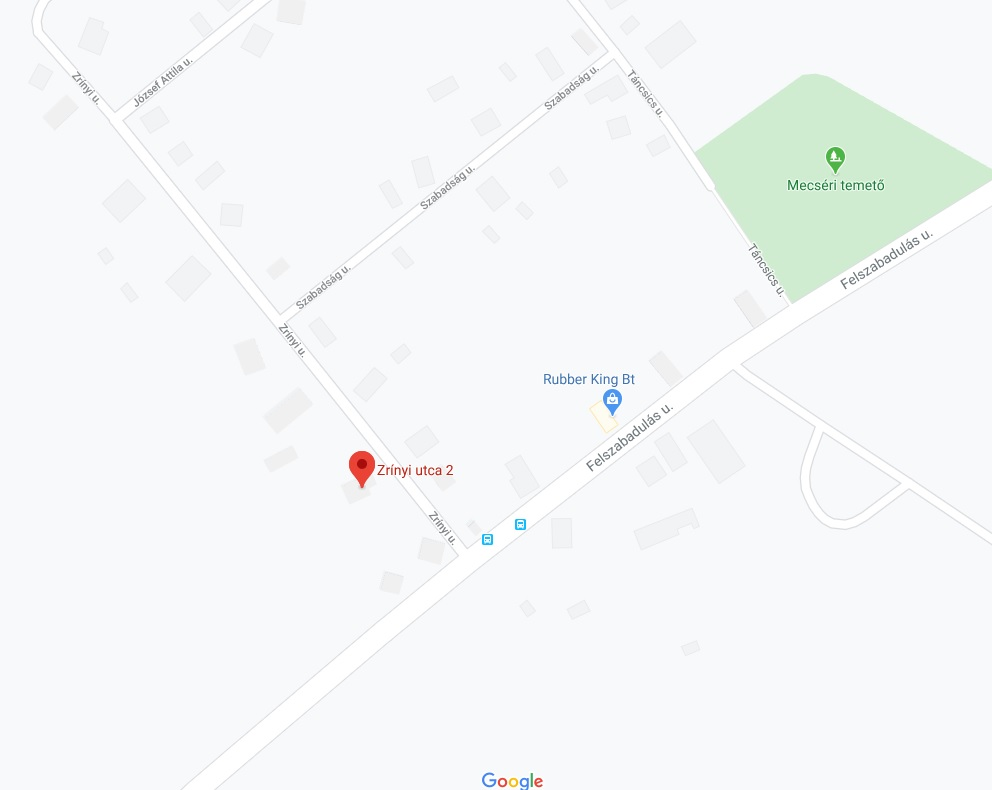

| Akciók |
| Étlap |
| Alkotásaink |
| Bemutatkozás |
Fő profilunk a kézműves hamburgerek készítése. Minden összetevőt helyi termelőktől vásárolunk így biztosítjuk a kiváló minőséget és támogatjuk a kis közösségünk fejlődését. A hamburgerek mellet fogyaszthattok még import söröket és kézműves söröket is.
| hétfő- péntek | 09:00 - | 21:00 |
| Szombat | 12:00 - | 24:00 |
| Vasárnap | Zárva |
Cím: 9176 Mecsér Zrínyi Miklós u 2.
A képre kattintva megnyílik a google térkép.
Az oldal tetején lévő hivatkozásokat használva megnézheted az akcióinkat, étlapunkat és néhány fotót hamburgereinkről.